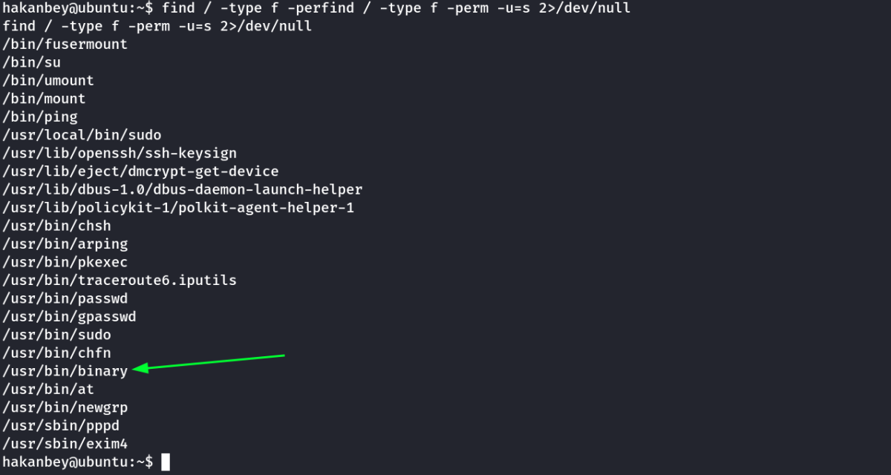

different CTF
THM: Different CTF
Enumeration
Rustscan & Nmap
Website Enumeration
From nmap output we can see that the site uses Wordpress 5.6
The issue is that if we directly load the IP of the website, the site won't load properly.
Therefore, I checked the network tab of inspect to get any DNS requests being made.
As we can see the site hasn't loaded properly. However, there are several requests to domain adana.thm
I added it to the hosts file & the website loaded properly.
10.10.39.85 adana.thm
Then, we go the http://adana.thm & the website loaded properly.
I didn't find any intresting info in the website. However, there is a login page. But, we do not have any credentials yet.
Directory Enumeration
Next, i move on to directory enumeration using gobuster.
we found an intesting directory called annoucements. Lets view it.
In the link, we found a picture & a wordlist. I downloaded them both.
I tried to see if anything is hidden in the picture using steghide. However, it asks for paraphrase.
Thus, we will use stegcracker to see whats hidden inside the picture & use the wordlist to open it.
stegcracker <filename> <wordlist>
eg. stegcracker austrailian-bulldog-ant.jpg wordlist.txt
I inspected the output file & found a base64 encoded string. I decoded it to find the FTP Credentials.

FTP Enumeration (With Found credentials)
Next, we explore the files.
It looks like we are in the root of the WordPress site. On a normal default install the wp-config.php file will contain the database credentials. Let's get it and have a look:
We found DB credentials, lets login to the admin login of the webpage.
Website Enumeration-2
we go to http://adana.thm/phpmyadmin to enter the DB
we use the found credentials. We got into the admin panel of the page.
We can see a list of databased on the left panel. Intesting point is there are 2 databases phpmyadmin & phpmyadmin1
Generally, the wp-options file contains the corresponding URL. Lets check them for each.
For phpmyadmin
For phpmyadmin1
Findings, we found that we have FTP write access to one webroot.
However, we have 2 wordpress websites.
http://adana.thm
http://subdomain.adana.thm
I added this domain in the hosts file.
We will test with a demo file to check which domain we have acccess to through the FTP.
I uploaded the following demo file using FTP.
echo "cybex was here" > test.txt
Next, we upload it.

Important
For this to work, we also need to change the permission of file to 777 for the file to load in the webserver.
Finally, lets check in both the domains, to see where I find my test file.


Thus, we have access to http://subdomain.adana.thm using the FTP access. We can upload a custom PHP reverse shell in FTP & access the reverse shell file using the website.
Foothold
I upload a PHP reverse shell in FTP found from /usr/share/webshells/php/php-revshell-all-OS.php by changing its name to shell.php & changing the IP & Port to connect back to.
Note: Remember to change the permission to 777
Start a reverse shell listner.
We can go the link in browser to activate the shell or we can use curl as foilows:
curl http://subdomain.adana.thm/shell.php
We have foothold on the machine.
Next, we stabilize the shell using python.
python -c 'import pty;pty.spawn("/bin/bash")'
export TERM=xterm
Lateral Movement
There is only 1 user named “hakanbey” in the home directory.
I tried may ways, but the way to get to this user is through sucrack
Link: https://github.com/hemp3l/sucrack
Its a login cracker which uses a wordlist.
We will use the wordlist found before in the /annoucements page.
I uploaded the sucrack binary from my local kali machine & wordlist using FTP. I moved both the files into /tmp directory & run the program.

Note: Remember to change permission to 777 in FTP.
Then, I moved both files to /tmp & ran it.
./sucrack -u hakanbey -w 100 wordlist.txt
The tool ran completely however, we didn't find any successful logins.
Then, we added the password style to entire wordlist.
The FTP Password began with 123adana
So we add a 123adana to the entire wordlist.txt
This can be easily done using in GUI using sublime text's find & replace.
Sublime Text
Hold Ctrl + H to open Find & Replace Panel
Select the “regular expression” button on the left.
Find ^ (Beginning of Line) & Replace with 123adana
Or
CLI sed tool
sed -e 's/^/123adana/' wordlist.txt > wordlist-new.txt
Next, we upload the new wordlist to the target machine & change its permission to 777 using FTP.
We will run the sucrack tool again using this wordlist.
./sucrack -u hakanbey -w 100 wordlist-new.txt
We cracked it.
Next, we switch to hakanbey user for user flag.
Privilege Escalation
Lets check for files with SUID set.
find / -type f -perm -u=s 2> /dev/null

We find an intresting application with suid bit set. Lets examine it,
We run the program with ltrace & find the string required to get the hint.
Lets run the program.
We run the one with SUID set & get the hint.
The hint is about hexeditor. We will get the root.jpg & examine with hex editor in our local kali machine.
we use xxd to check the hex contents of the image. We store the hex value the address 00000020
The hint in tryhackme platfrom says From HEX, To Base85
Thus, we take the hex in the address to cyberchef & encode it to Base85
We get the root credentials. Let switch to root user & collect the root flag.
Thanks !!